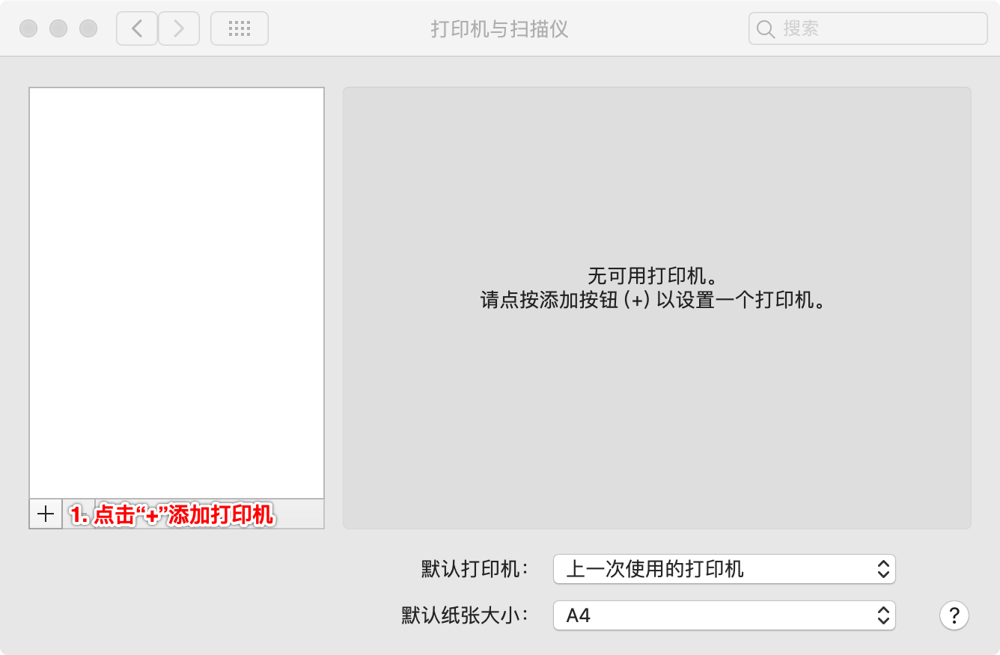
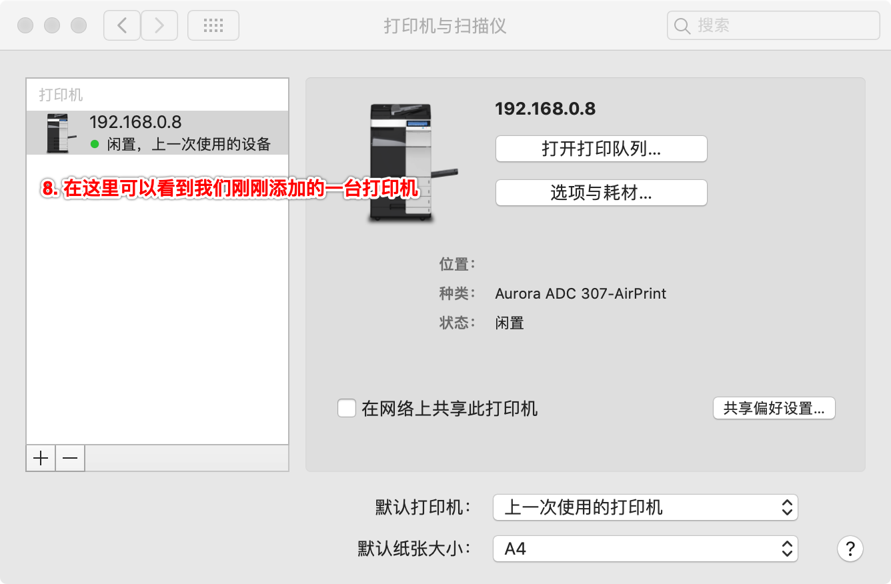

公司内使用苹果电脑的并不多，IT 部门给出的相关文档中也很少。怎样在苹果电脑上安装打印机就是这样，IT 部门给出的文章中仅仅说明了如何在 Windows 系统使用打印机，却没有说明在 macOS 系统中怎么做。很长一段时间以来，我都是将要打印的文件发给其他同事，让他们代为打印。
在前些天一次打印时，我就想了，每次都找人帮忙还是挺麻烦的，实在不够极客啊。很多高端用户都使用苹果电脑，打印机厂商没有理由不支持 macOS 系统。因此我决定在我的苹果电脑上安装打印机。
首先我查看了通过 IT 部门提供的文档得知，我们的打印机型号是FXDocuCentre-II C3000，IP是192.168.0.8。在网上进行一番搜索之后，总结了以下操作步骤，以飨读者。
注意，根据macOS官方文档显示，除了“AirPrint”协议之外，还支持“HP Jetdirect – Socket”，“行式打印机监控程序 - LPD”和“互联网打印协议 - IPP”协议等。



不需要额外安装驱动程序，是不是非常简单，非常优雅呢？